1 Getting started
Choose your language
The very first screen asks for your language: 日本語 or English. Tap one and the whole app switches at once.
You can change it later from the globe link on the welcome and sign-in screens, or in Settings ▸ Display ▸ Language.
Sign in
Ocren uses an account so that your books and memos are saved and carry over to a new device. After the welcome screen, tap Start and choose:
- Sign in with Apple, or
- Continue with Google, which opens a browser sign-in and then returns to the app.
Use the same account every time. Sign in with Apple and Continue with Google are separate accounts. If you chose Apple’s “Hide My Email”, Settings shows “Apple” instead of an address.
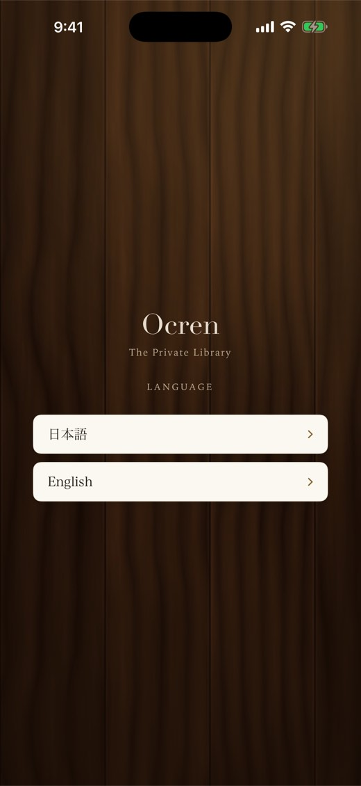
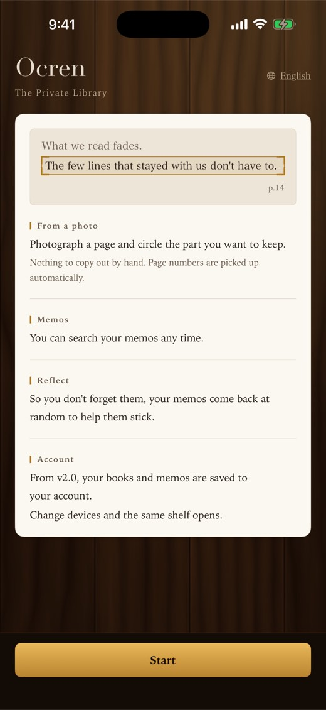
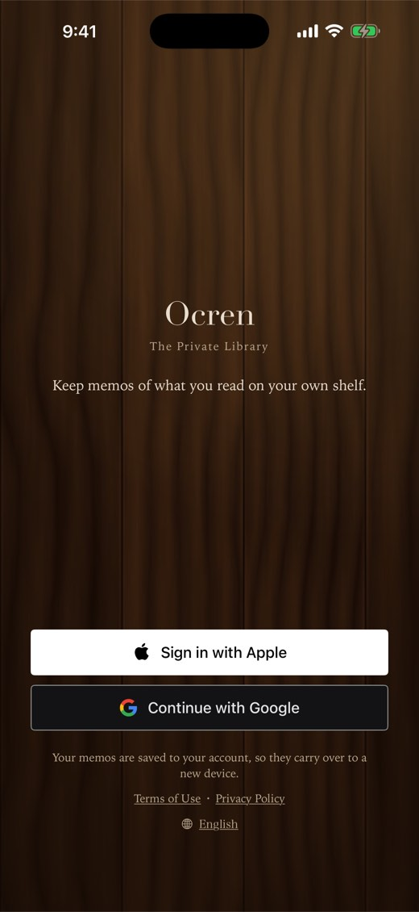
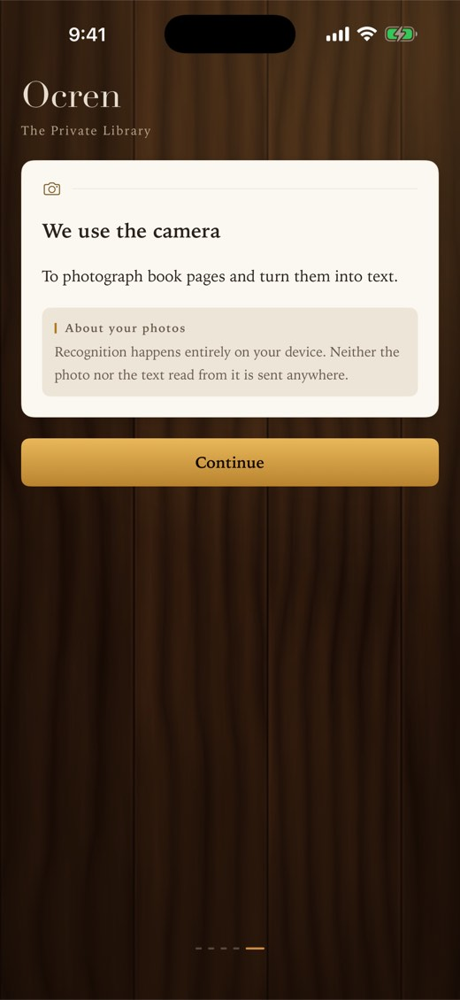
The short tour and camera permission
After your first sign-in, four cards introduce Add book, From a photo, Memos and Reflect. Use Next, or Skip to leave the tour. If you skip it, iOS asks for camera permission the first time you tap Add on a book. The last page, We use the camera, explains that recognition happens entirely on your device. Tap Continue and iOS asks for permission to use the camera. Whatever you answer, the app moves on, and you can change it later in iOS Settings.
Coming from version 1
If you used Ocren 1.x, version 2 brings your earlier books and memos over once, on first launch, and saves them to your new account.
2 The Library
The Library tab is your wooden bookshelf. Covers stand on the shelves. A book without a cover image gets a cloth cover printed with its title and author.
Reading status at a glance
Each cover carries a mark. The shapes differ, so you don’t have to rely on color:
- Reading: an amber bookmark ribbon hanging from the top of the cover.
- Read: a round seal with a check mark at the bottom right.
- Want to read: a small paper slip peeking out above the cover.
Filter, sort and search
- The tabs under the wordmark, All, Reading, Read and Want to read, filter the shelf. Each one shows its mark, so the tabs double as a legend.
- The arrows button switches the order between By date (newest added first) and By title.
- The list button switches to record view: numbered index cards with title, author, status and the number of memos. The grid button switches back to the shelf.
- The magnifier at the top right opens Search by title or author. Tap × to close it.
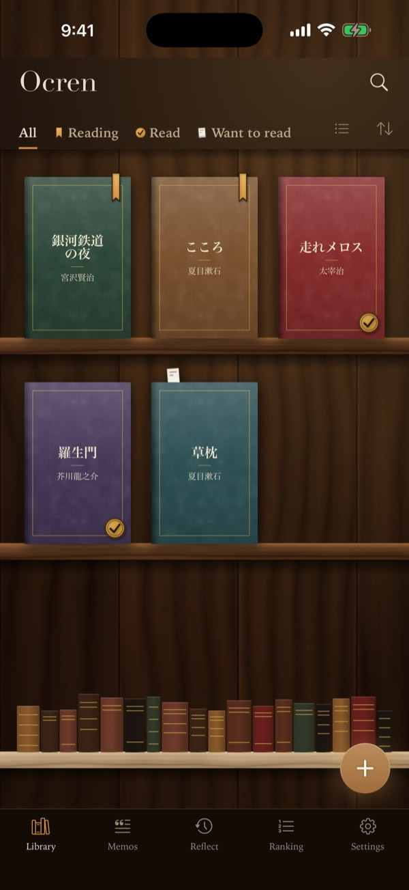
Tip: tapping the tab you are already on takes you back to its top screen.
3 Adding a book
On the Library, tap the amber + button at the bottom right (Add book) and choose one of three ways.
Search by title
Type a title or author in Search by title or author and press return. Tap a result to add the book with its cover. This needs an internet connection; if the search service can’t be reached you’ll see Search failed with Try again.
Scan barcode
Point the camera at the ISBN barcode on the back of the book. It is read automatically, looked up (Searching…), and added with its cover when there is one. If nothing matches, you’ll see “No book found for this ISBN”. To try another barcode, tap Close and open Scan barcode again. Scanning needs a connection and a device that supports Live Text; otherwise you’ll see Can't scan on this device.
Add manually
Enter a Title (required) and an Author, choose a Status, and if you like write a Note (optional) about the book. Tap Save. You can add a cover later with Choose cover.
Starting status: books added by search or barcode start as Want to read; books added manually start as Reading. You can change it any time on the book’s page.
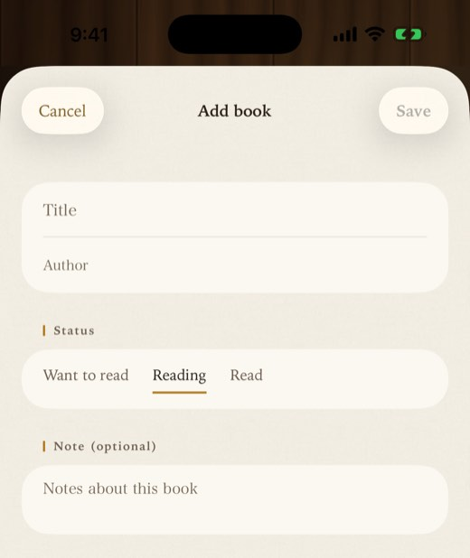
4 A book’s page
Tap a book on the shelf to open its page.
- Status: the pill under the title shows Reading, Read or Want to read. Tap it to change.
- Below it: the number of memos, and Started, the date you added the book.
- Setting a book to Read records the date you finished it. Reflect and Ranking count it from that date.
- The ⋯ button (More) has Edit book, Choose cover (searches covers for this title and author; needs a connection) and Delete book, which deletes the book and all its memos.
- Under Memos: the Add button, Search in this book (searches memo text and notes), and flag tabs showing only the flags used in this book. Tap a flag again to clear the filter.
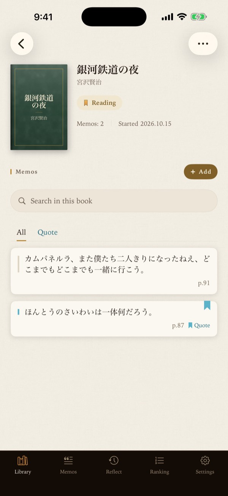
5 Capturing a memo
This is the heart of Ocren: photograph a page, select the lines, and keep them as a memo.
1. Open the camera
On the book’s page, tap Add. The camera opens right away.
- SILENT at the top right: the camera takes a frame from the video feed, so there is no shutter sound.
- Photos (next to the shutter) picks an image from your photo library, for example an e-book screenshot.
- Type opens an empty memo form to enter text by hand.
- CLOSE leaves the camera.
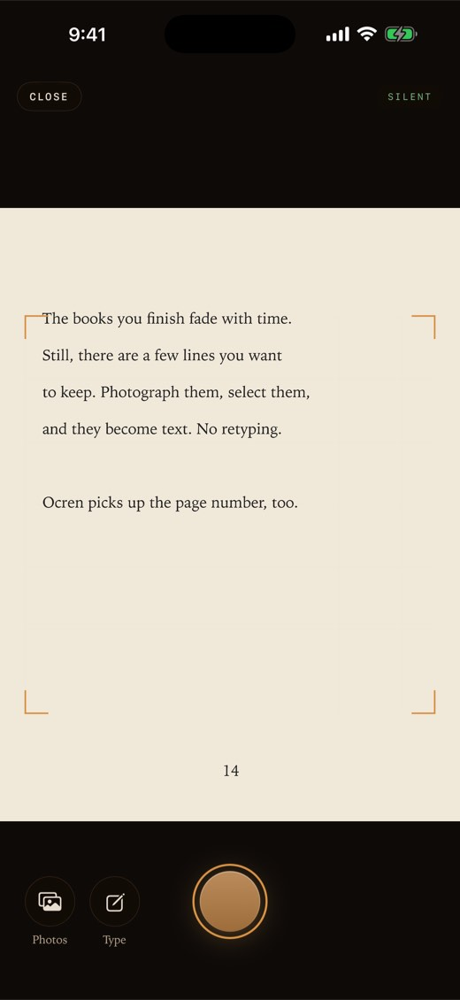
2. Select the lines
On From a photo, drag a rectangle over the lines you want to keep. If you select nothing, the whole page is read (Drag to select an area (whole page if none)). Retake goes back to the camera, or to your photo library if the picture came from there.
3. Tap Scan
Tap Scan. Recognition runs on your device. When it reads well, the memo form opens with the text filled in. The page number printed on the page is picked up too.
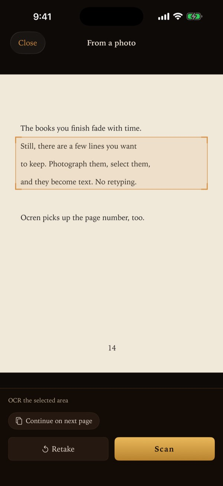
4. If Ocren isn’t sure
When Ocren reads something but isn’t confident, Check the result appears. The result is never thrown away. Choose:
- Try again, more carefully: reads again at higher resolution (slower).
- Select a different area
- Retake
- Edit this result: keep it and fix it yourself.
It may also say why, for example “This looks like a two-page spread. One page at a time reads better”, or “Ruby text and running heads were left out of the body text”.
If no text is found at all, you’ll see Nothing to read: select a different area, or take the photo somewhere brighter.
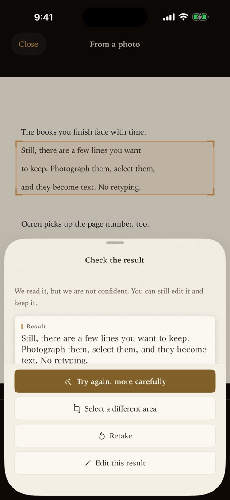
5. Check the memo and save
| Field | What it is |
|---|---|
| Quoted text | The text that was read. Required. Ocren never auto-corrects it; edit it if you want to. |
| Note (optional) | Your thoughts. |
| Page (optional) | Filled in automatically when the page number is found in the photo. |
| Flag | None (✕), or one of seven colors. See Flags and notes. |
Tap Save to return to the book. In the form opened from the camera, if you have changed anything and tap Cancel, Ocren asks Discard this memo? with Discard and Keep Editing. A memo made from two or more photos always asks.
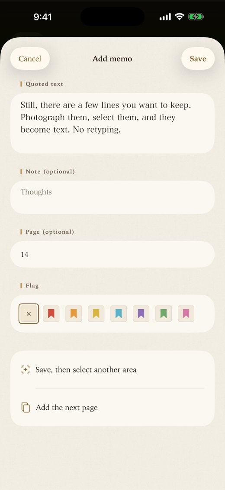
For good results:
- Photograph one page at a time, in good light.
- Select just the passage you want.
- Ocren reads Japanese text (vertical or horizontal) and English text (horizontal).
6 Several memos from one photo
- In the memo form, tap Save, then select another area. The memo is saved and you are back on the same photo.
- Saved areas are marked with a dotted frame and a ✓, and the hint reads Now select another area (whole page if none).
- Select the next area and tap Scan. The next memo gets the same page number as the first one from this photo.
- When you’re done, tap Close.
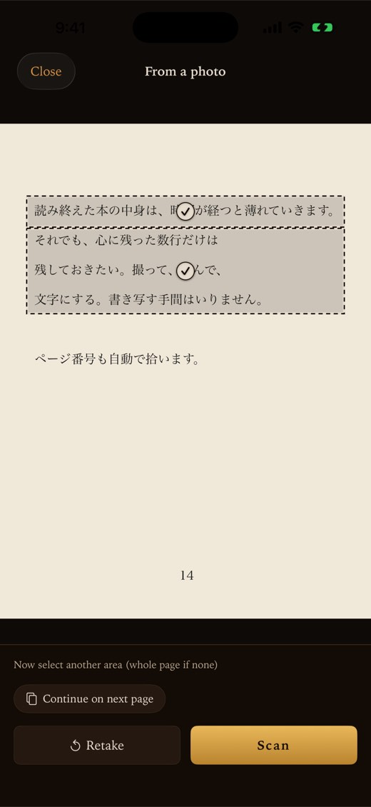
7 A passage across pages
When a passage runs onto the next page, you can keep it as one memo.
- On the selection screen, select the lines on this page, then tap Continue on next page: Ocren reads them first, then opens the camera. Or, in the memo form, tap Add the next page; what you have typed is kept. If Ocren isn’t sure about this page, the last choice on Check the result reads Use this and continue.
- The camera opens for the next page. The chip at the bottom right shows Photo 2. Photos is still there if the page is a picture.
- Select where the text continues (“Photo 2: select where the text continues”) and tap Scan.
- The text is joined onto the end of the quoted text, without an extra line break. The form shows From 2 photos and “Added the text from photo 2” with Undo, which takes the last page back off.
- Repeat for more pages, then tap Save. It is saved as one memo.
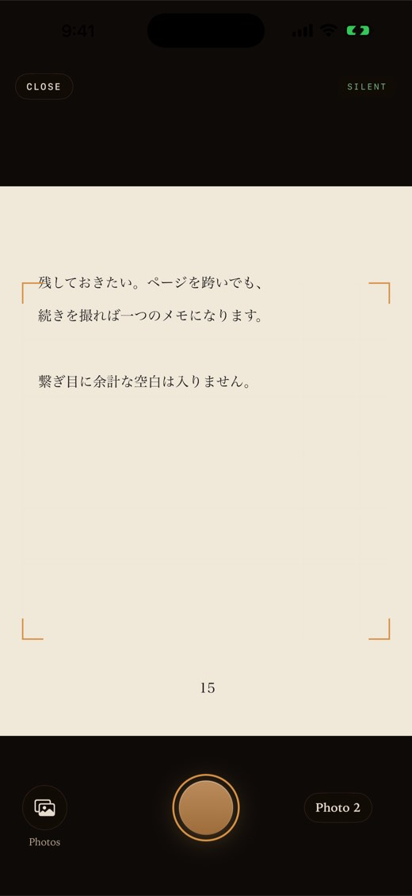
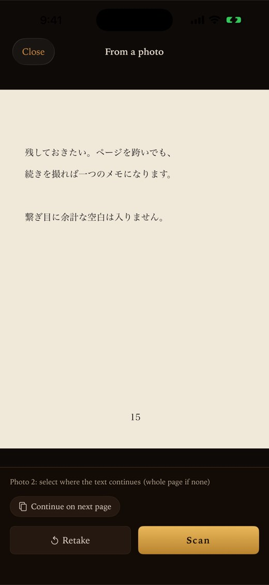
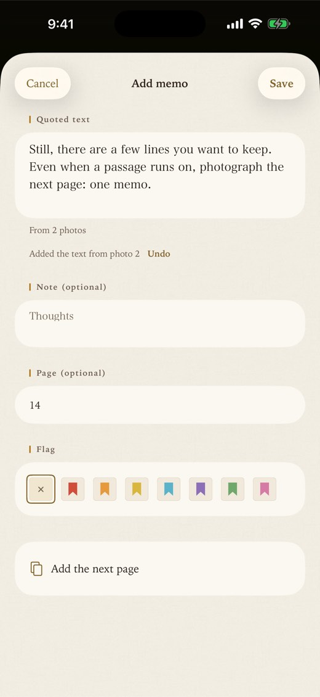
Good to know: the page number comes from the first photo only. Your note, page and flag are kept while you go back to the camera. CLOSE on the next-page camera returns to the memo without losing anything.
8 Without the camera
- Type a memo: tap Type on the camera screen, or press and hold Add on the book’s page and choose Enter manually.
- Use a saved picture: tap Photos on the camera screen.
If the camera is off
If Ocren isn’t allowed to use the camera, you’ll see Camera access is off with Choose from library and Enter manually. Tap You can allow the camera in Settings to open iOS Settings; when you come back, the camera works.
Other messages you might see: The camera is restricted on this device (for example by Screen Time), Couldn't start the camera, and No camera is available on this device. Photos and manual entry still work.
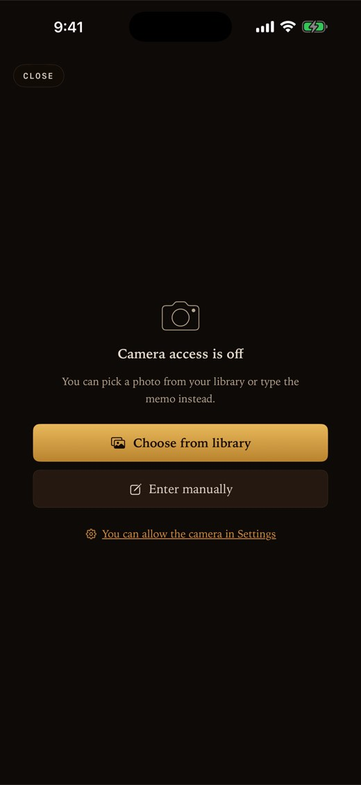
9 Unsaved memos
If you switch away from Ocren while writing a memo and iOS later closes the app, what you typed is kept on this device. The next time you tap Add on that book (or press and hold it and choose Enter manually), you’ll see You have an unsaved memo:
- Continue Writing: opens the form with your text.
- Discard and Start Over: deletes the draft and starts again the way you began: the camera, or an empty form if you chose Enter manually.
- Cancel: does nothing and keeps the draft for later.
Only the text is kept (quoted text, note, page and flag), not the photo. There is one draft per book, on this device only.
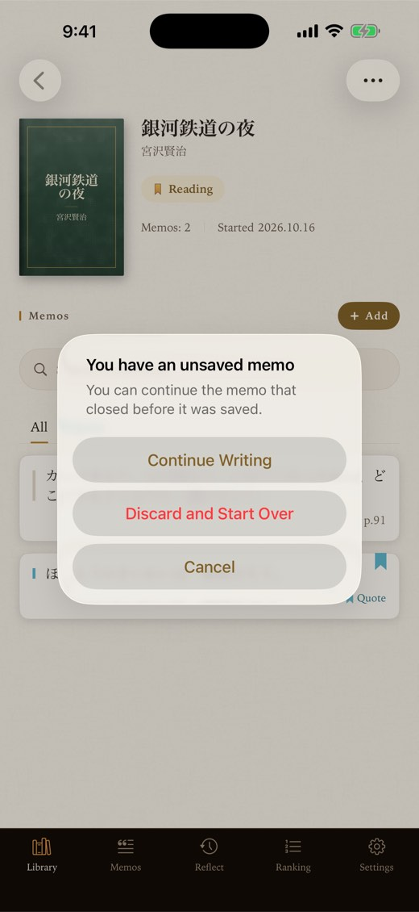
10 Flags and notes
Each memo can have a Note with your thoughts and one of seven flags. The default names are:
| Color | Default name |
|---|---|
| Red | Important |
| Orange | Later |
| Yellow | Insight |
| Cyan | Quote |
| Purple | Question |
| Green | Resonates |
| Pink | Favorite |
Rename them in Settings ▸ Flag names. Clear a field to go back to the default name. Flag names are stored on this device only.
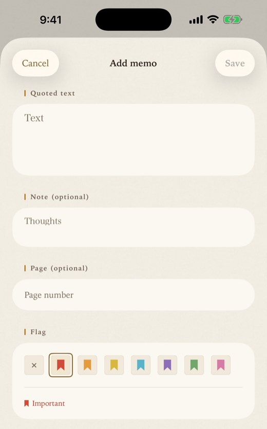
11 The Memos tab
The Memos tab gathers the memos from every book.
- Search matches memo text, notes and book titles as you type.
- Flag tabs: All plus each flag in use. Tap a flag again to clear it.
- The count line shows how many memos match.
- The sort button switches Newest and By book.
- Tap a memo to open it.
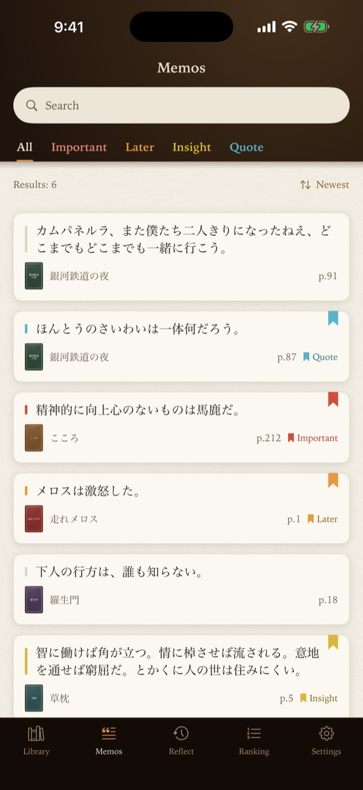
13 Reflect and the daily reminder
- Quote of the day shows one of your memos, chosen at random each time you open the tab. Another picks a different one (when you have two or more). Tap the memo to open it.
- Reading log: choose All time, Year, Month or Week (weeks start on Monday).
- Finished: books set to Read in that period.
- Memos: memos saved in that period.
- Started: books added in that period, whatever their status.
- Memos over time: a bar chart. Year shows 12 months, Month shows 7-day blocks, Week shows each day.
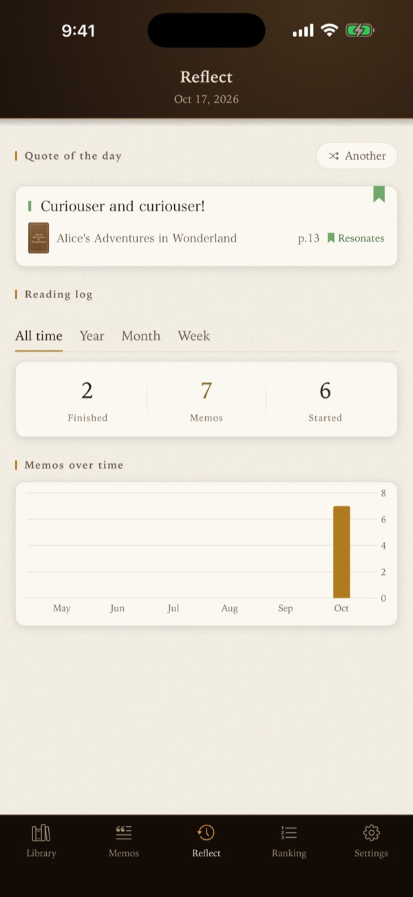
Daily reminder
In Settings ▸ Quote of the day, turn on Daily reminder (iOS asks for notification permission the first time) and choose a Time (8:00 by default). Ocren then schedules a notification for each of the next 14 days, each showing one of your memos with its book title. The notifications are created on your device from the memos you have at that moment.
Reminders are prepared for the next 14 days. Ocren prepares them again every time you open it and whenever you add, edit or delete a memo, so new memos are included without doing anything. If you don’t open Ocren for 14 days, the reminders stop until you open it again. Notifications need your permission: if they don’t arrive, check iOS Settings ▸ Notifications ▸ Ocren.
14 Ranking
Rankings compiled from everyone’s shelves and memos, up to 50 books each:
| Tab | What it counts |
|---|---|
| Popular | Readers with this book on their shelf |
| Memos | Memos saved from this book |
| Finished this month | Readers who finished it this month |
| Want to read | Readers who want to read it |
Pull down to refresh. Ranking needs a connection. Only the title, author, cover and counts are shown; who added a book, and the text of memos, are never shown.
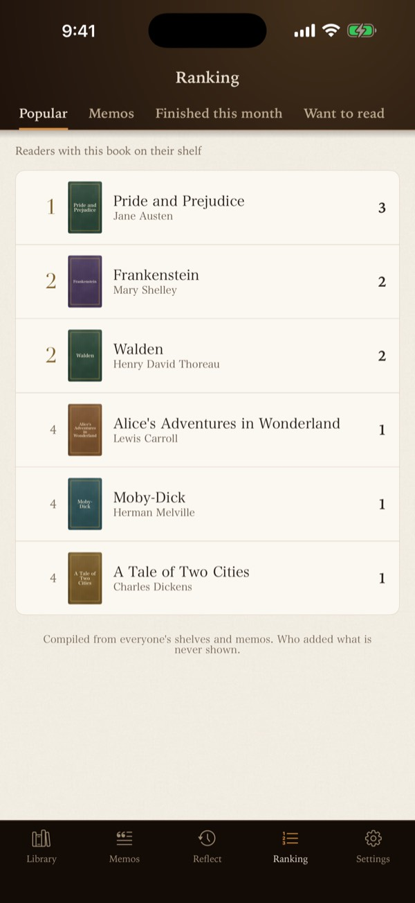
15 Settings and your account
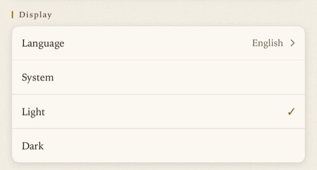
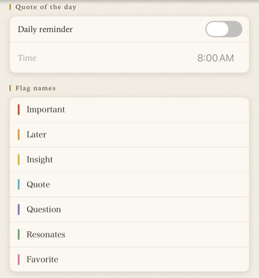
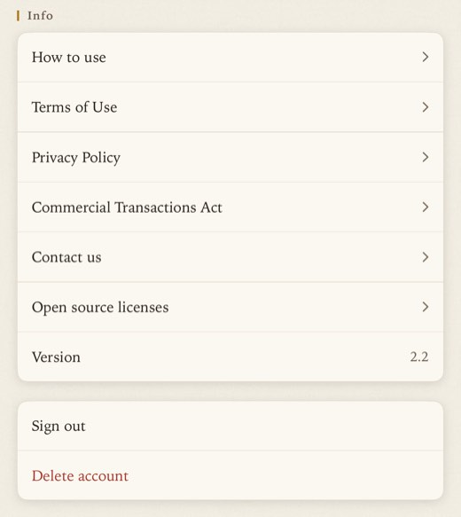
Account
- Signed in as: your email address, or “Apple” if you use Hide My Email.
- Sync: how long ago it last synced, Syncing…, Not synced yet, or Failed (tap to retry). When it failed, the reason is shown; tap the row to try again.
- If you see Your sign-in has expired, tap Sign in again. Ocren asks Sign out?; tap Sign out, then sign in again the same way as before (the same Apple or Google account).
Subscription
Remove Ads (Monthly) and Remove Ads (Yearly), Restore purchases (this also restores the one-time “remove ads” purchase from version 1), and, once you subscribe, Manage subscription. See Ads and Remove Ads.
Display
Language: 日本語 or English. Below Language, choose System, Light or Dark. This changes the paper screens; the wooden shelf, the tab bar and the camera always stay dark.
Quote of the day and Flag names
The daily reminder and the names of your flags.
Info
How to use (this guide), Terms of Use, Privacy Policy, Commercial Transactions Act, Contact us (opens an email), Open source licenses (the software used for text recognition, and its terms) and Version.
Sign out
Sign out asks Sign out?. The books and memos on this device come back the next time you sign in with the same account. If some changes have not reached your account yet, Ocren tells you; it’s better to go back online and let it sync first.
Delete account
Delete account ▸ Delete. Your account and all the books and memos stored in the cloud are permanently deleted. This can’t be undone. The books and memos already on this iPhone are not erased by this; to remove them too, delete the app.
Signed in as someone else
If you sign in with a different account from the one this device’s books belong to, Ocren pauses syncing and asks what to do:
- Move them to this account
- Erase and use this account's data (nothing stays on this device; it asks once more before erasing)
- Sign out and use a different account
Unless you move them, the books stay with the previous account. This usually happens when the same person signs in once with Apple and once with Google.
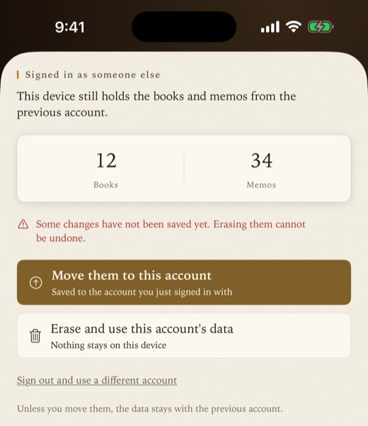
16 Ads and Remove Ads
Ocren is free with ads: a banner just above the tab bar, and now and then a full-screen ad at a natural break, such as after you add a book or after you finish capturing memos. An ad may also appear when you come back to the app. Ads never cover the camera. Ads are provided by Google AdMob; when Google’s ads can’t load, for example offline, Ocren may show its own notices instead (such as “Read without ads”). Ocren does not ask for permission to track you.
Remove Ads (Monthly) or Remove Ads (Yearly) in Settings ▸ Subscription turns off every banner and full-screen ad. Subscriptions renew automatically unless canceled at least 24 hours before the end of the current period. Cancel anytime with Manage subscription or in your App Store settings. Prices are shown in your local currency on the App Store.
17 Privacy and offline use
- Recognition stays on your device. The text-recognition model is inside the app. Neither your photos nor the recognized text are sent anywhere. Photos are kept in memory only while you work, are never saved, and are released when you save or close.
- Works offline: capturing, recognition, saving, editing and searching memos, the Library, Reflect, the daily reminder and quote cards.
- Needs a connection: signing in, syncing, book search, barcode lookup, choosing a cover, Ranking, purchases, and opening web pages such as this guide.
- Syncing: changes you make offline are sent to your account automatically when you’re back online.
- Saved to your account: your books (title, author, cover image address, note, status, finish date) and memos (text, page, note, flag, dates).
- Kept on this device only: flag names, unsaved drafts, the original recognition result for each memo made from a photo, and your language, appearance and reminder settings.
For full details, see the Privacy Policy.
18 FAQ and troubleshooting
Are my photos or the text uploaded anywhere?
No. Text recognition runs entirely on your iPhone or iPad. Photos are kept only in memory while you work and are never saved. The text you save as a memo is stored in your account so that it carries over to a new device.
Does Ocren work in airplane mode?
Yes. Taking photos, recognizing text, and saving, editing and searching memos all work offline. Changes sync when you’re back online. Sign-in, book search, barcode lookup, choosing a cover, Ranking and purchases need a connection.
It says “Camera access is off”.
Tap You can allow the camera in Settings, or turn on the camera in iOS Settings ▸ Ocren. Until then you can use Photos or Type.
How do I add a memo without the camera?
On the book’s page, press and hold Add and choose Enter manually. You can also tap Type on the camera screen.
Can I use e-book screenshots?
Yes. On the camera screen, tap Photos and choose the screenshot.
Recognition isn’t good. What can I do?
Photograph one page at a time in good light, and select only the passage you want. When Ocren isn’t sure, use Try again, more carefully, Select a different area or Retake, or Edit this result. The text is never auto-corrected, so you can fix it before saving. Ocren reads Japanese text (vertical or horizontal) and English text (horizontal).
The page number is missing or wrong.
Type it in Page (optional). It’s read automatically from the first photo only.
The barcode isn’t found.
Use Search by title or Add manually. To scan a different barcode, close the scanner and open it again.
Books I add by search or barcode show “Want to read”.
That’s the starting status. Tap the status on the book’s page to change it to Reading or Read.
My shelf is empty on a new phone.
Sign in the same way as before. Sign in with Apple and Continue with Google are separate accounts. Settings ▸ Account ▸ Signed in as shows which account you’re using.
Sync says “Failed (tap to retry)” or “Your sign-in has expired”.
Tap the row to try again. If your sign-in has expired, tap Sign in again, confirm Sign out, and sign in again with the same Apple or Google account as before.
How do I restore or cancel my subscription?
Settings ▸ Subscription ▸ Restore purchases, signed in to the Apple ID you bought with. To cancel, use Manage subscription or your App Store settings.
The daily reminder doesn’t arrive.
Check that Daily reminder is on in Settings ▸ Quote of the day, and that notifications for Ocren are allowed in iOS Settings ▸ Notifications ▸ Ocren. Reminders are prepared for the next 14 days and prepared again whenever you open Ocren or save or delete a memo, so if you haven’t opened Ocren for a while, opening it once sets them up again. A reminder needs at least one saved memo.
Can other people see my books in Ranking?
Ranking shows only counts with the title, author and cover. Who added a book, and the text of memos, are never shown.
How do I delete my account?
Settings ▸ Delete account ▸ Delete. Your account and all books and memos on our server are permanently deleted. To also remove the copy on your iPhone, delete the app.
19 Contact
Questions, bug reports or ideas? Email us, or use Settings ▸ Info ▸ Contact us in the app.
ocren-support@yensense.com